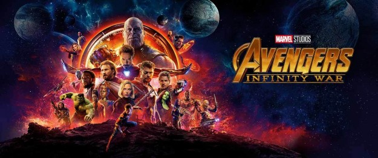
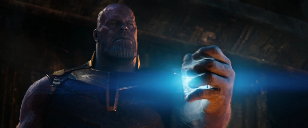

AVENGERS INFINITY WAR SPOILERSIZ İNCELEME: OHA N’APTINIZ?
O gün geliyor. Neredeyse her gün bir şekilde gündemimizin baş köşesine oturan Marvel Cinematic Universe’ün 10 yıllık emeğini tek ekranda toplayacak Avengers: Infinity War vizyona giriyor. Çok kısa zaman sonra Thanos nihayet tahtından kalkacak ve bütün sonsuzluk taşlarını toplamak için Marvel kahramanlarının karşısına çıkacak. Neyden bahsettiğimizi anlamanız için daha fazla çene çalmamıza gerek yok. Bahsettiğimiz şey eğlence tarihinin en beklenen filmlerinden biri. Biz bu filmi herkesten önce, basın gösteriminde izleme imkanına sahip olduk. Bu da o filmin tek spoiler dahi içermeyen incelemesi.

Hiçbir şey söylemeden önce Infinity War’ı bir film olarak değerlendirmenin çok zor olduğunu belirtmek gerekiyor. Şimdiye kadar hiçbir filmin sahip olmadığı kadar odak karaktere sahip ve hiçbir filmin yapmak zorunda olmadığı kadar çok şeyi birbirine bağlamak zorunda. Bu nedenle standart film dinamiklerinin Infinity War’da çalışmasını bekleyemeyiz. Bu eseri event ya da Türkçesiyle hadise olarak görmek işimizi çok kolaylaştıracak. Bu bakış açısıyla; Infinity War geek gözlerin uzun zamandır göremediği kadar heyecanlı, birçok duyguyu içinde barındırabilen, hayal kırıklığı yaratmayan, devasa, kocaman, oha n’aptınız bir hadise.
Infinity War’ın vermesi gereken en büyük sınav onlarca meseleyi ve karakteri eğreti gözükmeden buluşturmaktı. Age of Ultron, BvS, Justice League filmlerinin başarısızlıklarının gösterdiği gibi bu her yiğidin verebileceği bir sınav değildi. Gönül rahatlığıyla söyleyebilirim ki Infinity War bu sınavı vermiş. İki buçuk saatlik dev hadise boyunca gerekenden daha az ya da daha fazla üzerine düşülmüş bir karakter göremiyoruz. Her bir kahraman kendi filmlerinden taşıdıkları karakteristiklerini doyasıya yaşayıp filmde kayda değer yer etme imkanını buluyor. Üstelik bireysel olarak iyi yansıtılmış karakterler çok anlamlı kombinasyonlarla ekip yapılıyor ve bu ekipler çok keyifli sahnelere yol açıyor. Keşke daha fazla görsek dediğimiz karakterler yok mu, var. Ama bu gereklilikten değil, sevgimizden.

Filmin diğer başarıyla idare etti şey ise kötü adamı, yani Thanos. Açık olalım, bu başarı zaten şarttı. MCU yıllarca Dev Titan’ı işaret edip ondan korkmamız gerektiğini söyledi. Belki çok korkmadık ama merak ettik, heyecan duyduk. Nihayetinde Thanos karşımıza bütün kudretiyle çıktı. Filmin adı Avengers diye başlasa da başrolü aynı taşlar gibi ele geçirdi ve ekranı taşları bile kullandığından daha efektif kullandı. Kahramanlarımız odağı kendi aralarında devir teslim ederken Thanos hep odaktaydı. Odakta kaldığı süre boyunca da istendiği gibi korku salmayı başarıyordu ve… anlaşılırdı Thanos. Evrenin yarısını yok etmeyi arzulayan bir canavar empati yapılmaya uygundu. Ben ve inanıyorum ki tüm salon bir an için kendini Thanos’a saygı duyarken buldu. Nedeni ve nasılı ağzına kadar spoiler dolu. Ama sonucu net: Yıllardır parmakla gösterilen Thanos bütün o şamatayı hak edecek şekilde yazılmış, oynanmış, çekilmişti.

Infinity War hakkında daha çok, uzun uzadıya konuşacağımız kesin. Şimdilik, filmin şoku hala damarlarımızda gezinirken birkaç kelam etmiş olduk. Yazıya noktayı koymadan önce; Infinity War’ın aldığı büyük sorumluluğu genel itibariyle iyi idare ettiğinin, bazı kritik hataları olmasa çok daha özel bir yere ulaşacağının tekrar altını çizmek; fakat değerini net olarak saptamak için hem biraz zaman geçmesinin hem de bundan sonraki Avengers filmini izlememiz gerektiğini belirtmek istiyorum.